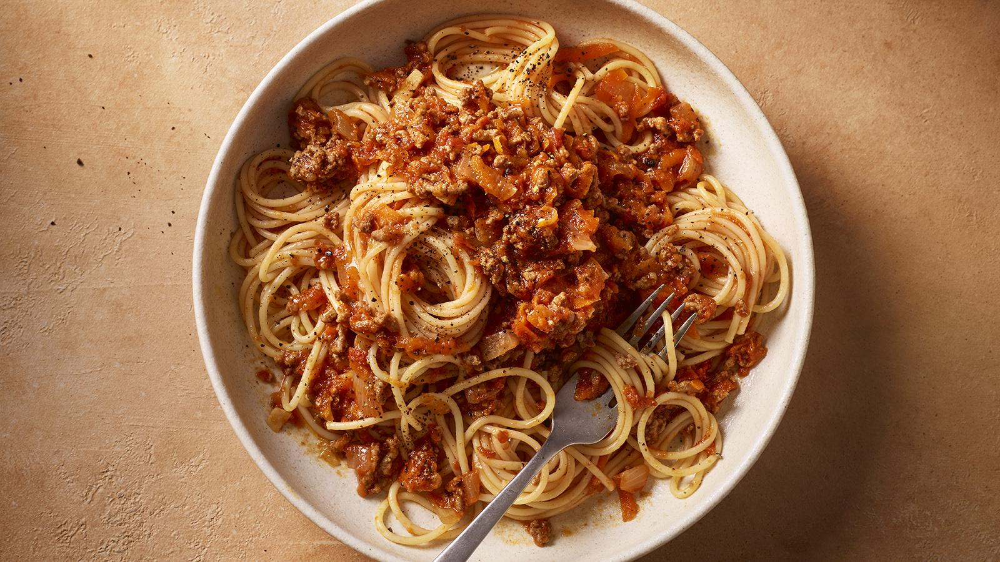
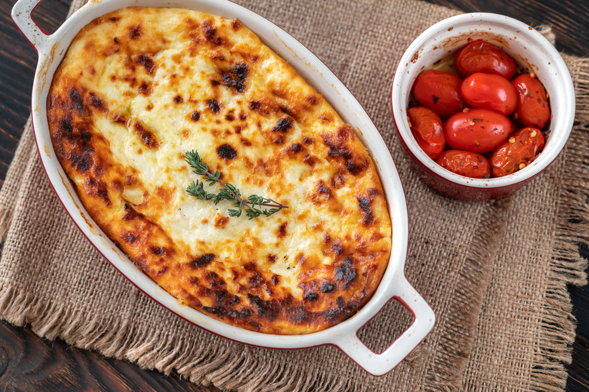
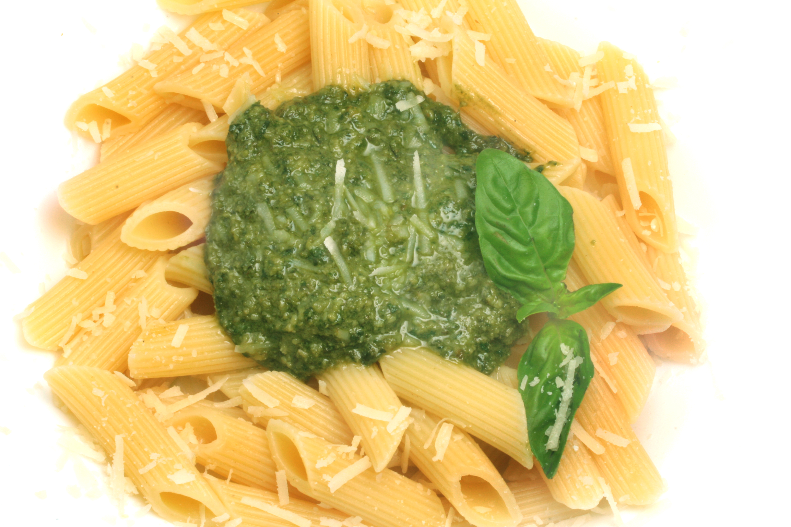
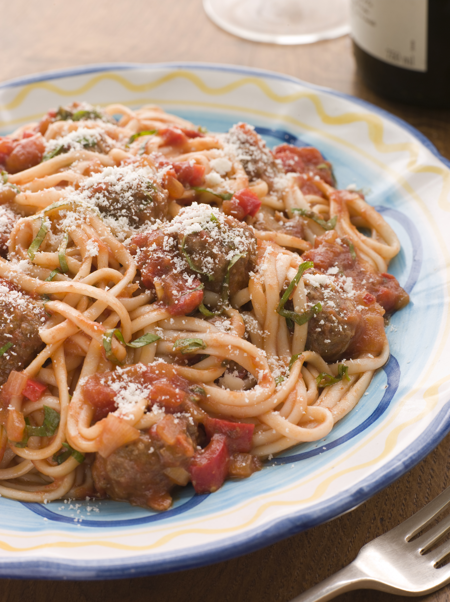

Easy spaghetti bolognese
Everyone needs a basic spaghetti bolognese recipe that still tastes great, no matter how simple. Get that depth of flavour by cooking the sauce very gently until its super rich. This spag bol is designed to be a low cost recipe.

Ingredients
- 2 tbsp olive oil
- 400g beef mince
- 1 onion, finely chopped
- 2 garlic cloves, finely chopped
- 2 x 400g tins chopped tomatoes
- 400ml stock (made from a stock cube)
- 600g dried spaghetti (or any pasta shape)
- Salt and pepper
Method
- Heat a large saucepan over a medium heat. Add a tablespoon of olive oil, then the beef mince with a pinch of salt and pepper. Cook until well browned, then remove to a plate.
- Add the remaining oil to the pan and fry the onion gently for 5-6 minutes until soft. Add the garlic and cook for a further 2 minutes. Return the mince to the pan.
- Add the tomatoes and stock, stir well and bring to a simmer. Cook gently for 45 minutes, seasoning to taste.
- When ready, cook the spaghetti in a large pan of salted boiling water according to the packet instructions.
- If the sauce is too thick, loosen it with a spoonful or two of the starchy pasta water.
- Drain the spaghetti and toss through the bolognese sauce. Serve immediately.
Related recipes

Lasagna

Pizza

Pasta pesto

Spaghetti meatballs
Explore recipe
Find new dishes to try
Tips og advice
Improve your cooking
Brand
Discover related brands
Reviews
15/09/26
Anna
Home cook
This recipe was really easy to follow and turned out delicious. I especially liked how simple the ingredients were. Definitely making it again!
12/04/26

Cathrine
Amateur cook
I tried this recipe for the first time and the instructions were clear and the final result tasted great. A really good recipe for a relaxed dinner.
10/08/26
Mads
Professional chef
A well balanced recipe with clear instructions and great flavour. I liked the combination of ingredients and how easily the recipe can be adapted.